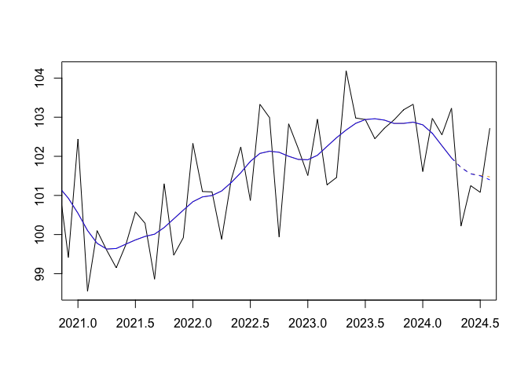
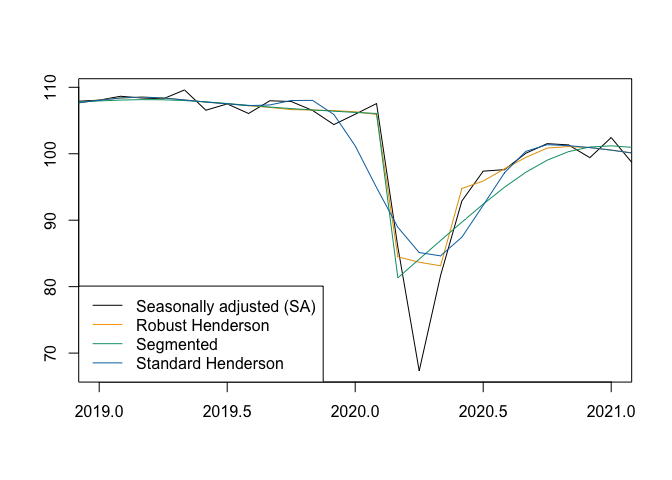

Why not publish the trend-cycle?
The goal of publishTC is to facilitate the computation, evaluation, and visualization of trend-cycle components from time series using modern state-of-the-art methodology:
- Using the Cascade Linear Filter (CLF) and surrogate cut-and-normalise asymmetric filters, as done by Statistics Canada (Dagum and Luati 2008);
- Using the classical Henderson symmetric filter and surrogate Musgrave asymmetric filters, as done by the Australian Bureau of Statistics (Trewin 2003);
- Using a local parametrization of Musgrave asymmetric filters (Quartier-la-Tente 2024);
- Extending Henderson filters to take into account additive outliers (AO) and level shifts (LS) (Quartier-la-Tente 2025).
Quick Start
1. Trend-Cycle Estimation
Estimate the trend-cycle component using the standard Henderson filter:
# Example dataset: French Industrial Production Index
x <- french_ipi[, "manufacturing"]
# Compute Henderson trend-cycle estimates
tc_hend <- henderson_smoothing(x, length = 13)
# Summary diagnostics (I/C ratio, MCD, filter length)
summary(tc_hend)
#> $`I/C ratio`
#> [1] 3.318081
#>
#> $`I/C ratios`
#> [1] 3.3180811 1.6933861 1.0927936 0.8358296 0.6684998 0.5812624 0.5760156
#> [8] 0.5072746 0.4796632 0.4476804 0.4014496 0.4138149
#>
#> $MCD
#> [1] 4
#>
#> $Length
#> [1] 132. Multi-Method Comparison
Compare different trend-cycle estimation approaches on the same series:
# Estimate trend using multiple methods
all_tc <- smoothing(x)
# Plot comparison
plot(all_tc$henderson, xlim = c(2021, 2024.5))
lines(all_tc$henderson_localic, col_tc = "blue")
3. Outlier-Robust & Segmented Smoothing
Account for Additive Outliers (AO) and Level Shifts (LS) during estimation:
# Identify outliers using RegARIMA wrapper
outliers <- x13_regarima_outliers(x)
# Compute robust Henderson trend-cycle estimates
tc_robust <- henderson_robust_smoothing(
x,
ao = outliers$ao,
ls = outliers$ls,
local_icr = TRUE
)
# Segmented smoothing around a structural break
tc_seg <- segmented_smoothing(
x,
breaks = list(c(2020, 3)),
break_method = "two-sides"
)
plot(tc_robust, xlim = c(2019, 2021))
lines(tc_seg, col_tc = "#009E73")
lines(tc_hend, col_tc = "#0072B2")
legend(
"bottomleft",
legend = c("Seasonally adjusted (SA)", "Robust Henderson", "Segmented", "Standard Henderson"),
col = c("black", "orange", "#009E73", "#0072B2"),
lty = 1
)
4. Turning Point & Ripple Diagnostics
Identify economic turning points and short-term unwanted ripples:
# Find turning points (upturns and downturns)
tp <- turning_points(tc_hend)
tp
#> $upturn
#> [1] 1990.667 1991.333 1993.750 1995.833 1998.917 2001.833 2002.833 2003.417
#> [9] 2004.417 2005.333 2006.583 2007.667 2009.167 2012.833 2013.583 2014.667
#> [17] 2016.333 2018.083 2019.500 2020.250 2021.167 2022.917
#>
#> $downturn
#> [1] 1990.917 1991.833 1995.000 1998.417 2001.000 2002.167 2004.167 2004.833
#> [9] 2006.333 2007.333 2008.000 2011.083 2013.167 2013.917 2015.833 2017.750
#> [17] 2019.083 2019.750 2020.667 2022.583 2023.500
# Count unwanted ripples (cycles under 11 months)
ripples <- unwanted_ripples(tc_hend)
ripples
#> [1] 30Main Functions Overview
| Category | Main Functions |
|---|---|
| Estimation |
henderson_smoothing(), clf_smoothing(), henderson_robust_smoothing(), segmented_smoothing(), smoothing()
|
| Diagnostics |
icr(), icrs(), mcd(), smoothness(), bandwidth(), turning_points(), unwanted_ripples(), implicit_forecasts(), underlying_forecasts()
|
| Visualization (base R) |
plot(), lines(), lollypop(), implicit_forecasts_plot(), confint_plot(), growthplot(), implicit_forecasts_plot(), underlying_forecasts_plot()
|
| Visualization (ggplot2) |
autoplot(), gglollypop(), ggconfint_plot(), ggsmoothing_plot(), gggrowthplot(), ggimplicit_forecasts_plot(), ggunderlying_forecasts_plot()
|
| Utilities |
write.ts(), read.ts(), x13_regarima_outliers()
|
References
- Dagum, E. B., & Luati, A. (2008). A Cascade Linear Filter to Reduce Revisions and False Turning Points for Real Time Trend-Cycle Estimation. Econometric Reviews, 28(1-3), 40‑59. https://doi.org/10.1080/07474930802387837
- Henderson, R. (1916). Note on graduation by adjusted average. Transactions of the Actuarial Society of America, 17, 43‑48.
- Musgrave, J. (1964). A set of end weights to end all end weights. US Census Bureau [custodian].
- Quartier-la-Tente, A. (2024). Improving Real-Time Trend Estimates Using Local Parametrization of Polynomial Regression Filters. Journal of Official Statistics, 40(4), 685-715. https://doi.org/10.1177/0282423X241283207
- Quartier-la-Tente, A. (2025). Estimation de la tendance-cycle avec des méthodes robustes aux points atypiques. https://github.com/AQLT/robustMA
- Trewin, D. (2003). A guide to interpreting time series - Monitoring trends. Australian Bureau of Statistics Information Paper. https://www.abs.gov.au/AUSSTATS/abs@.nsf/Lookup/1349.0Main+Features12003?OpenDocument